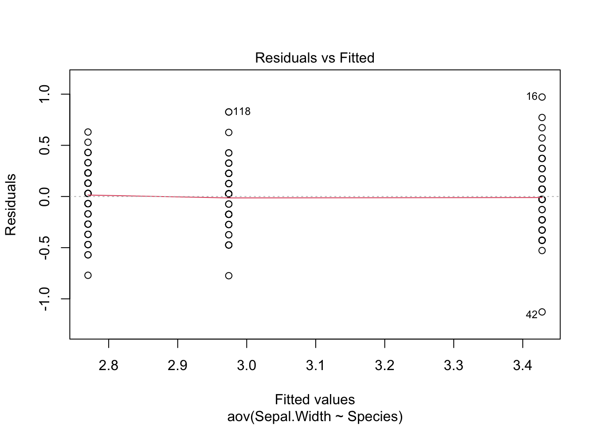
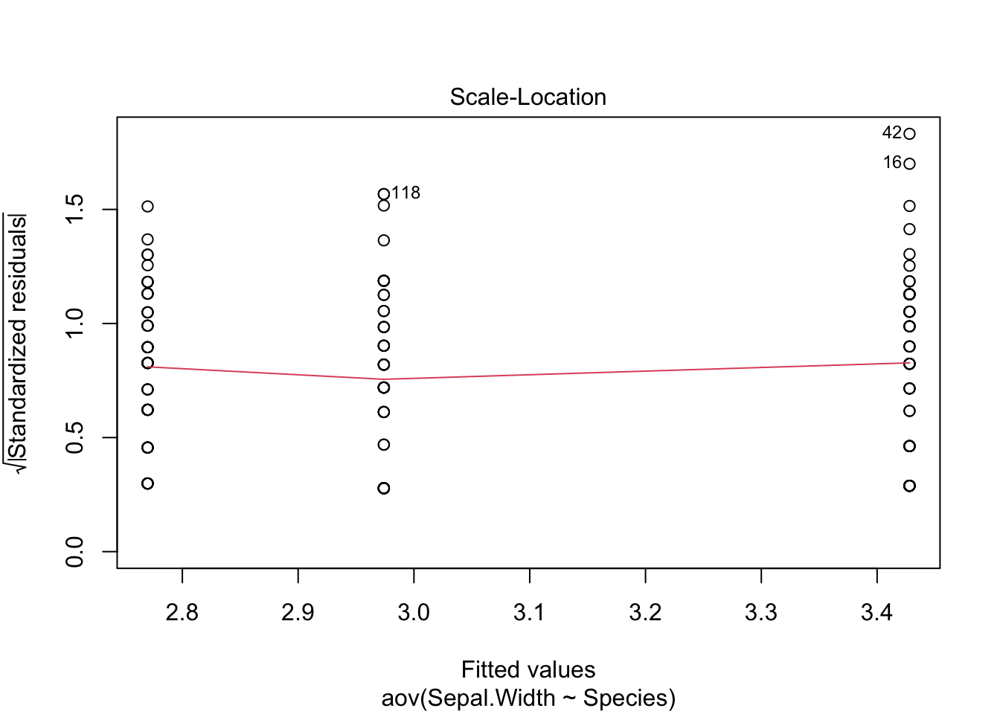
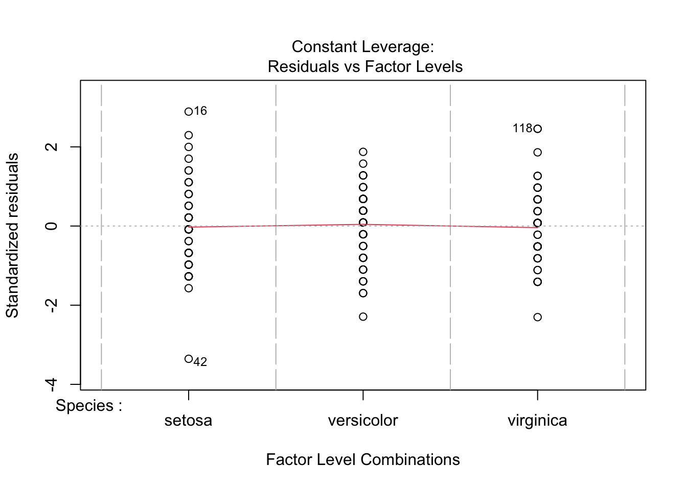
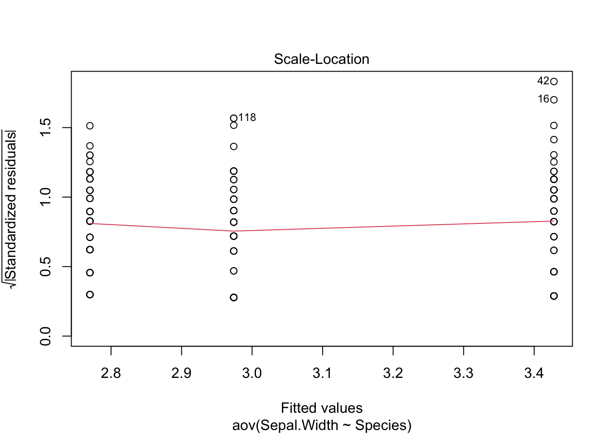
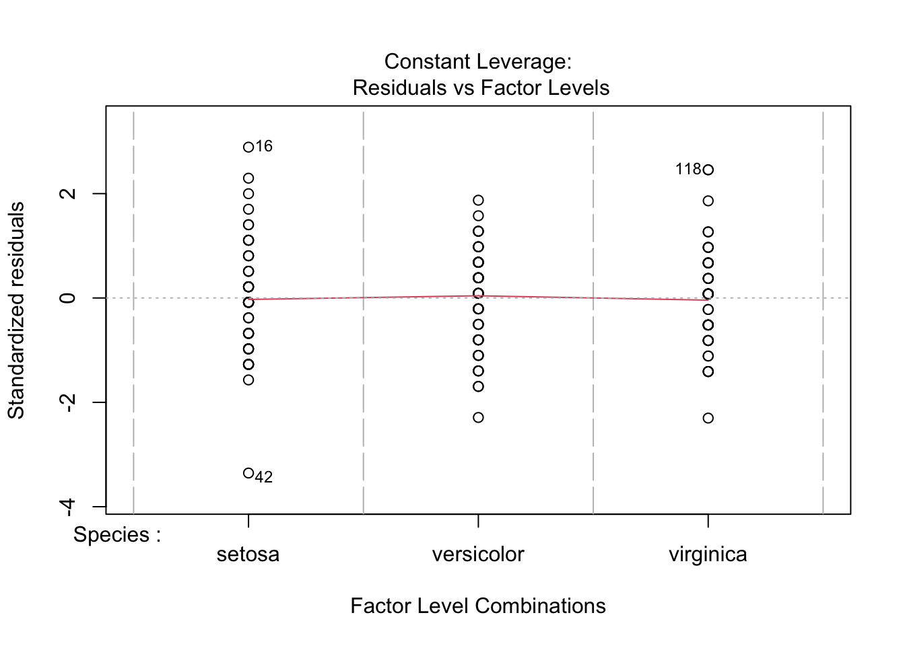
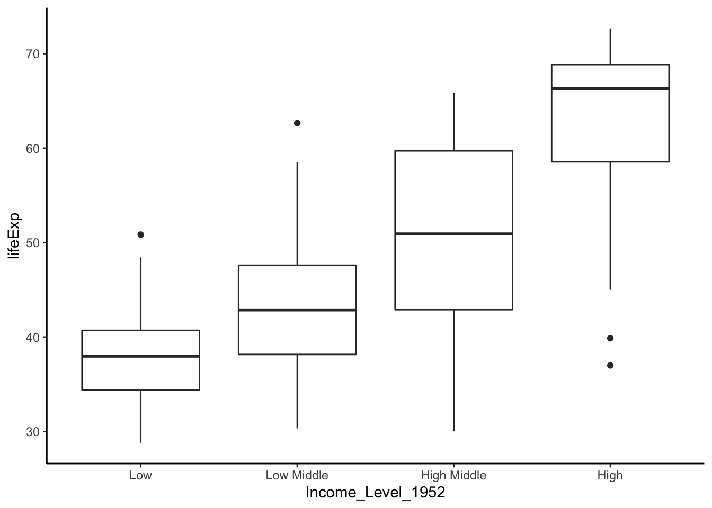

9 Comparing multiple means
Throughout this lab, we will provide a pipeline to help you wrangle data, perform statistical analyses, and (perhaps most importantly) visualize data in R. Here, we will learn how to compare the means using parametric tests and medians using non-parametric tests of multiple groups.
9.1 Loading packages
Let’s load the usual packages, and one new package called car (Companion to Applied Regression).
library(gapminder)
library(tidyverse)
library(car) # for Levene's test9.2 One-way ANOVA
9.2.1 The iris dataset
The iris dataset contains information about three species of flowers: setosa, veriscolor, and virginia. Iris is a built-in dataset, meaning we can call it without reading it in.
iris$Speciesrefers to one column iniris. That is, the column with the name of the species (setosa, versicolor, or virginica).- We can see how many rows and columns are in a
data.framewith thedimcommand.dim(iris)prints out the number of rows (150) and the number of columns (5):
head(iris)## Sepal.Length Sepal.Width Petal.Length Petal.Width Species
## 1 5.1 3.5 1.4 0.2 setosa
## 2 4.9 3.0 1.4 0.2 setosa
## 3 4.7 3.2 1.3 0.2 setosa
## 4 4.6 3.1 1.5 0.2 setosa
## 5 5.0 3.6 1.4 0.2 setosa
## 6 5.4 3.9 1.7 0.4 setosasummary(iris)## Sepal.Length Sepal.Width Petal.Length Petal.Width
## Min. :4.300 Min. :2.000 Min. :1.000 Min. :0.100
## 1st Qu.:5.100 1st Qu.:2.800 1st Qu.:1.600 1st Qu.:0.300
## Median :5.800 Median :3.000 Median :4.350 Median :1.300
## Mean :5.843 Mean :3.057 Mean :3.758 Mean :1.199
## 3rd Qu.:6.400 3rd Qu.:3.300 3rd Qu.:5.100 3rd Qu.:1.800
## Max. :7.900 Max. :4.400 Max. :6.900 Max. :2.500
## Species
## setosa :50
## versicolor:50
## virginica :50
##
##
## Analysis of Variance (ANOVA) allows us to test whether there are differences in the mean between multiple samples. The question we will address is:
Are there differences in average sepal width among the three species?
To run an ANOVA, we need to check if
- The variance is is equal for each group, and
- The data distributes normally within each group.
Let’s address the first point.
leveneTest(Sepal.Width ~ Species, data = iris)## Levene's Test for Homogeneity of Variance (center = median)
## Df F value Pr(>F)
## group 2 0.5902 0.5555
## 147A p-value of 0.5555 suggested that the variances are not significantly different. This means we should proceed with a parametric test like ANOVA (otherwise, use the Kruskal-Wallis test). Keep in mind we haven’t yet checked the normality. We will do it after running ANOVA.
We start by building an analysis of variance model with the aov() function:
In this case, we pass two arguments to the aov() function:
- For the
formulaparameter, we passSepal.Width ~ Species. This format is used throughout R for describing relationships we are testing. The format isy ~ x, where the response variables (e.g.y) are to the left of the tilde (~) and the predictor variables (e.g.x) are to the right of the tilde. In this example, we are asking if petal length is significantly different among the three species. - We also need to tell R where to find the
Sepal.WidthandSpeciesdata, so we pass the variable name of theiris data.frameto thedataparameter.
But we want to store the model, not just print it to the screen, so we use the assignment operator <- to store the product of the aov function in a variable of our choice
Sepal.Width.aov <- aov(formula = Sepal.Width ~ Species, data = iris)Notice how when we execute this command, nothing printed in the console. This is because we instead sent the output of the aov call to a variable. If you just type the variable name, you will see the familiar output from the aov function:
Sepal.Width.aov## Call:
## aov(formula = Sepal.Width ~ Species, data = iris)
##
## Terms:
## Species Residuals
## Sum of Squares 11.34493 16.96200
## Deg. of Freedom 2 147
##
## Residual standard error: 0.3396877
## Estimated effects may be unbalancedTo see the results of the ANOVA, we call the summary() function:
summary(object = Sepal.Width.aov)## Df Sum Sq Mean Sq F value Pr(>F)
## Species 2 11.35 5.672 49.16 <2e-16 ***
## Residuals 147 16.96 0.115
## ---
## Signif. codes: 0 '***' 0.001 '**' 0.01 '*' 0.05 '.' 0.1 ' ' 1The species do have significantly different sepal width (P < 0.001). However, ANOVA does not tell us which species are different. We can run a post hoc test to assess how the species are different. A Tukey test comparing means would be one option. We will do the Tukey test after determining normality.
Now, let’s take a look at the normality. First, we will plot the diagnostic figures.
plot(Sepal.Width.aov) 

Most importantly, the residuals in Q-Q plot (upper right) should align with the line pretty well. This figure is acceptable. If the residuals deviate from the line too much, the data would not be considered normal. If you still perform the ANOVA, you should view your results critically (or ignore them, at worst).
Please do not include such diagnostic figures in the main text of your manuscripts. This might qualify for a supplementary figure at most.
Although we’ve also examined residuals with the QQ plot, we can also use a formal test:
residuals_Sepal_Width <- residuals(object = Sepal.Width.aov)
shapiro.test(x = residuals_Sepal_Width)##
## Shapiro-Wilk normality test
##
## data: residuals_Sepal_Width
## W = 0.98948, p-value = 0.323A p-value of 0.323 suggested that the assumption of normality is reasonable.
Recall that a residual is an “error” in result. More specifically, a residual is the difference of a given data point from the mean (\(r = x - \mu\)).
So far, we have demonstrated
- Normality in distribution.
- Homogeneity variance, and
These two justified our choice for one-way ANOVA. The result of ANOVA also indicated that at least one species of the 3 has significantly different sepal width from others. Which one?
To do this, we need to run “Post-Hoc” test. Let’s do Tukey Honest Significant Differences (HSD). The nice thing is that TukeyHSD() can directly take the result of ANOVA as the argument.
TukeyHSD(Sepal.Width.aov)## Tukey multiple comparisons of means
## 95% family-wise confidence level
##
## Fit: aov(formula = Sepal.Width ~ Species, data = iris)
##
## $Species
## diff lwr upr p adj
## versicolor-setosa -0.658 -0.81885528 -0.4971447 0.0000000
## virginica-setosa -0.454 -0.61485528 -0.2931447 0.0000000
## virginica-versicolor 0.204 0.04314472 0.3648553 0.0087802The difference between every pair are significant (\(p < 0.05\)).
9.2.2 Non-parametric alternatives to ANOVA
In reality, your data usually will not fulfill every assumption for an ANOVA.
In case of a non-normal sample, there are two ways to address the problem:
- Apply appropriate data transformations techniques, or
- Use a non-parametric test
I highly recommend you to explore the tricks of data transformation. If you can rescue it back to normal distribution, parametric tests usually can allow you to do more powerful analysis.
If you have exhausted your attempts to data transformation, you may then use non-parametric tests. A note for Kruskal-Wallis test.
When your data doesn’t satisfy the normality or equal variance assumption, ANOVA does not strictly apply. However, the one-way ANOVA is not very sensitive to deviations from normality. Kruskal-Wallis doesn’t assume normality, but it does assume same distribution across groups (equal variance). If your data do not meet either assumption, you would want to use Welch’s One-way test. Now, let’s get back to gapminder data.
Let’s add another categorical variable calle Income_Level. This time we will split by the quartiles.
dat.1952 <- gapminder %>% filter(year == 1952)
border_1952 <- quantile(dat.1952$gdpPercap, c(.25, .50, .75))
dat.1952$Income_Level_1952 <- cut(dat.1952$gdpPercap,
c(0, border_1952[1], border_1952[2], border_1952[3], Inf),
c('Low', 'Low Middle', 'High Middle', 'High'))
head(dat.1952)## # A tibble: 6 x 7
## country continent year lifeExp pop gdpPercap Income_Level_1952
## <fct> <fct> <int> <dbl> <int> <dbl> <fct>
## 1 Afghanistan Asia 1952 28.8 8425333 779. Low
## 2 Albania Europe 1952 55.2 1282697 1601. Low Middle
## 3 Algeria Africa 1952 43.1 9279525 2449. High Middle
## 4 Angola Africa 1952 30.0 4232095 3521. High Middle
## 5 Argentina Americas 1952 62.5 17876956 5911. High
## 6 Australia Oceania 1952 69.1 8691212 10040. Highdat.2007 <- gapminder %>% filter(year == 2007)
border_2007 <- quantile(dat.2007$gdpPercap, c(.25, .50, .75))
dat.2007$Income_Level_2007 <- cut(dat.2007$gdpPercap,
c(0, border_2007[1],
border_2007[2], border_2007[3], Inf),
c('Low', 'Low Middle', 'High Middle', 'High'))
head(dat.2007)## # A tibble: 6 x 7
## country continent year lifeExp pop gdpPercap Income_Level_2007
## <fct> <fct> <int> <dbl> <int> <dbl> <fct>
## 1 Afghanistan Asia 2007 43.8 31889923 975. Low
## 2 Albania Europe 2007 76.4 3600523 5937. Low Middle
## 3 Algeria Africa 2007 72.3 33333216 6223. High Middle
## 4 Angola Africa 2007 42.7 12420476 4797. Low Middle
## 5 Argentina Americas 2007 75.3 40301927 12779. High Middle
## 6 Australia Oceania 2007 81.2 20434176 34435. HighFor now, let’s focus on the data of in 1952.
ggplot(data = dat.1952, aes(x = Income_Level_1952, y = lifeExp)) +
geom_boxplot() +
theme_classic()
Let’s check the variance.
leveneTest(lifeExp ~ Income_Level_1952, data = dat.1952)## Levene's Test for Homogeneity of Variance (center = median)
## Df F value Pr(>F)
## group 3 4.3637 0.005714 **
## 138
## ---
## Signif. codes: 0 '***' 0.001 '**' 0.01 '*' 0.05 '.' 0.1 ' ' 1A p-value of 0.0047 suggested that the variances are significantly different. Therefore, we shoud not run ANOVA or Kruskal-Wallis. Let’s run Welch’s one-way test.
result <- oneway.test(lifeExp ~ Income_Level_1952, data = dat.1952)
result##
## One-way analysis of means (not assuming equal variances)
##
## data: lifeExp and Income_Level_1952
## F = 69.799, num df = 3.000, denom df = 73.647, p-value < 2.2e-16A p-value of 2.2e-16 suggested that at least one category of Income_Level_1952 had values of lifeExp that are significantly different from others. Let’s run a Post-Hoc test to find out.
Since we are running a non-parametric test, an appropriate test would be Games-Howell post-hoc test. Unfortunately, R does not have a built-in function for Games-Howell. Let’s define a function to do this task.
Note: you don’t need to know how the code below works.
games.howell <- function(grp, obs) {
#Create combinations
combs <- combn(unique(grp), 2)
# Statistics that will be used throughout the calculations:
# n = sample size of each group
# groups = number of groups in data
# Mean = means of each group sample
# std = variance of each group sample
n <- tapply(obs, grp, length)
groups <- length(tapply(obs, grp, length))
Mean <- tapply(obs, grp, mean)
std <- tapply(obs, grp, var)
statistics <- lapply(1:ncol(combs), function(x) {
mean.diff <- Mean[combs[2,x]] - Mean[combs[1,x]]
# t-values
t <- abs(Mean[combs[1,x]] - Mean[combs[2,x]]) / sqrt((std[combs[1,x]] / n[combs[1,x]]) + (std[combs[2,x]] / n[combs[2,x]]))
# Degrees of Freedom
df <- (std[combs[1,x]] / n[combs[1,x]] + std[combs[2,x]] / n[combs[2,x]])^2 / # numerator dof
((std[combs[1,x]] / n[combs[1,x]])^2 / (n[combs[1,x]] - 1) + # Part 1 of denominator dof
(std[combs[2,x]] / n[combs[2,x]])^2 / (n[combs[2,x]] - 1)) # Part 2 of denominator dof
# p-values
p <- ptukey(t * sqrt(2), groups, df, lower.tail = FALSE)
# sigma standard error
se <- sqrt(0.5 * (std[combs[1,x]] / n[combs[1,x]] + std[combs[2,x]] / n[combs[2,x]]))
# Upper Confidence Limit
upper.conf <- lapply(1:ncol(combs), function(x) {
mean.diff + qtukey(p = 0.95, nmeans = groups, df = df) * se
})[[1]]
# Lower Confidence Limit
lower.conf <- lapply(1:ncol(combs), function(x) {
mean.diff - qtukey(p = 0.95, nmeans = groups, df = df) * se
})[[1]]
# Group Combinations
grp.comb <- paste(combs[1,x], ':', combs[2,x])
# Collect all statistics into list
stats <- list(grp.comb, mean.diff, se, t, df, p, upper.conf, lower.conf)
})
# Unlist statistics collected earlier
stats.unlisted <- lapply(statistics, function(x) {
unlist(x)
})
# Create dataframe from flattened list
results <- data.frame(matrix(unlist(stats.unlisted), nrow = length(stats.unlisted), byrow=TRUE))
# Select columns set as factors that should be numeric and change with as.numeric
results[c(2, 3:ncol(results))] <- round(as.numeric(as.matrix(results[c(2, 3:ncol(results))])), digits = 3)
# Rename data frame columns
colnames(results) <- c('groups', 'Mean Difference', 'Standard Error', 't', 'df', 'p', 'upper limit', 'lower limit')
return(results)
}After defining the function, we can use it. If you decide to use the Games-Howell function, you can simply copy-and-paste it.
games.howell(grp = dat.1952$Income_Level_1952, # groups, the categorical variable
obs = dat.1952$lifeExp) # observations, the continuous variable## groups Mean Difference Standard Error t df p
## 1 Low : Low Middle 5.569 1.073 3.671 59.455 0.003
## 2 Low : High Middle 13.243 1.287 7.274 51.265 0.000
## 3 Low : High 24.536 1.247 13.917 53.954 0.000
## 4 Low Middle : High Middle 7.673 1.450 3.743 64.272 0.002
## 5 Low Middle : High 18.967 1.414 9.487 66.664 0.000
## 6 High Middle : High 11.294 1.583 5.046 68.787 0.000
## upper limit lower limit
## 1 9.580 1.559
## 2 18.077 8.408
## 3 29.210 19.863
## 4 13.081 2.266
## 5 24.235 13.699
## 6 17.187 5.4019.3 Beyond the one-way ANOVA
As seen in the previous example, a one-way ANOVA is a great tool for comparing multiple groups on one categorical variable such as income level. But what if we wanted to examine if life expectancy differs across the years 1952, 1972, and 2007 in addition to income level? In this case, we will need a two-way ANOVA.
Although we won’t cover a two-way ANOVA in this text, you can learn more about it in this article.